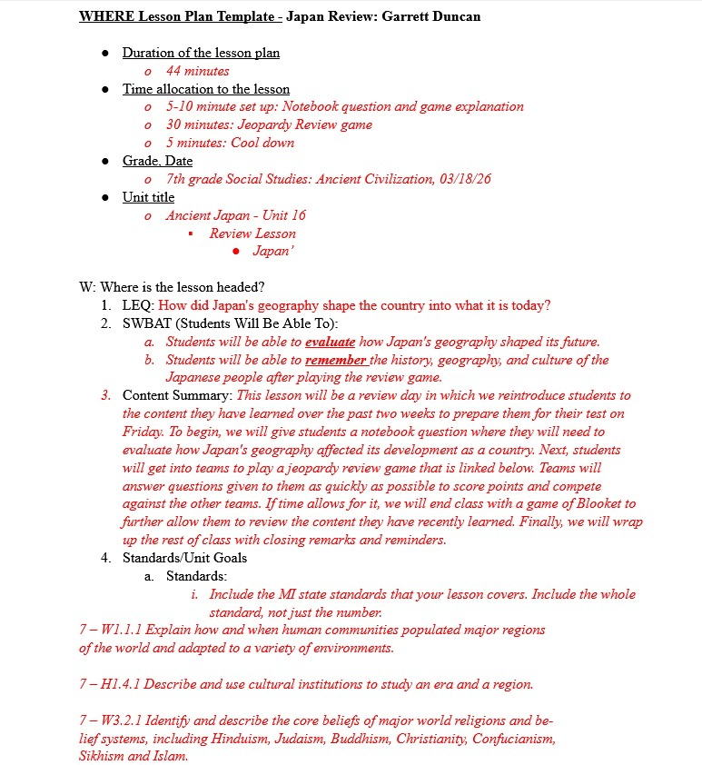
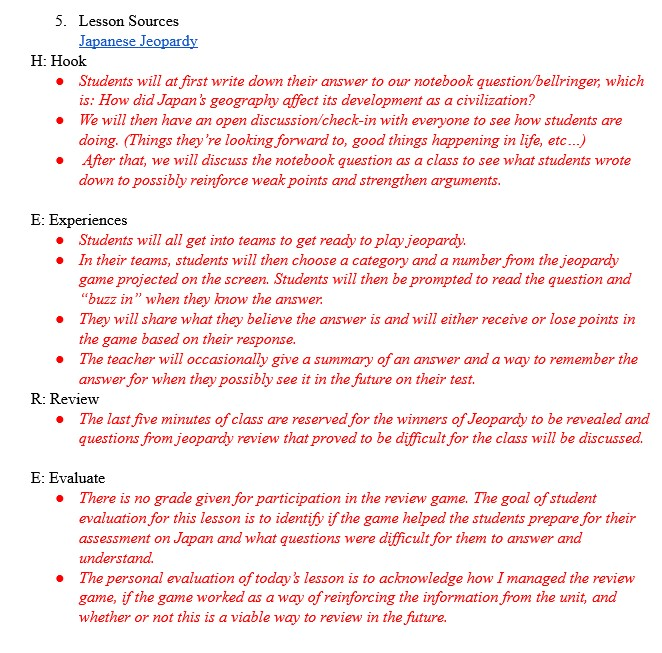
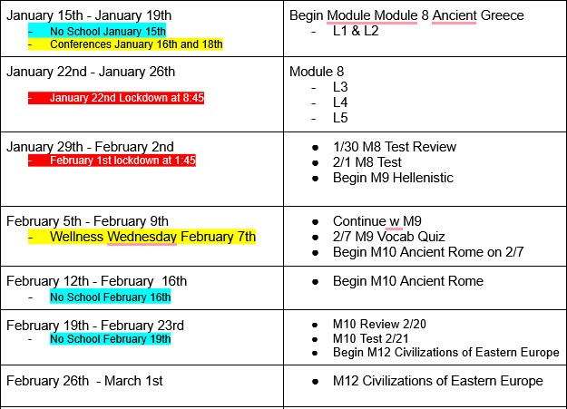

The three artifacts above are examples that display both designing a single lesson and a road map to help guide me through the coming weeks. The first two images are of a lesson plan that I created, where students were going to have a review day for their upcoming ancient Japan test. The lesson started with our usual notebook question to keep students in their usual routine. After the notebook question, we played a jeopardy review game that I created to help them review for their test. The last image displays a road map that my colleagues and I in my department all contributed to and followed to make sure we, as 7th-grade social studies teachers, are all on the same page. This helped me to remain organized and always be prepared for what I was going to be teaching next. When creating a lesson and a road map, it is always important to have goals in mind that you would like students to be able to reach at the end of lessons and at the end of units. After lessons, I always placed an emphasis on trying to make the next hour better by talking with my mentor teacher on what went well and what I could improve upon.